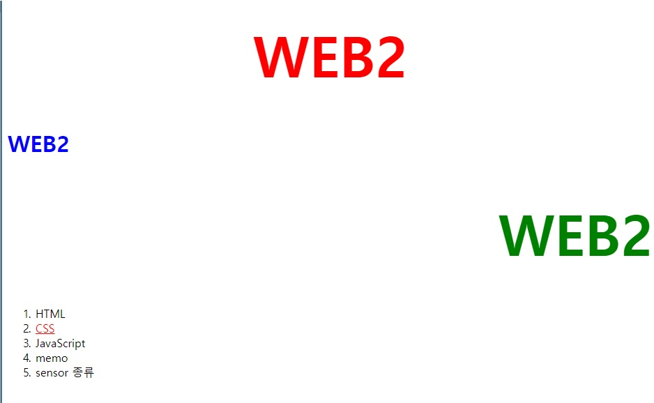
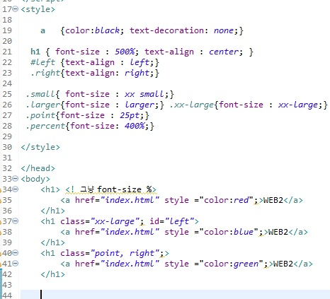

| 참조 사이트 | 1 |
|---|---|
| anchor detail | 2 |
<> tag!
단락을 표현할 때는 줄바꿈 태그 보다는 단락을 표현하는 태그인 p 태그가 더 좋다. 웹페이지를
정보로서 가치있게 해준다.
br태그는 줄바꿈을 의미할 뿐 br 태그는 줄바꿈을 많이하고 싶으면 여러번
쓰면된다.
p(paragraph) 태그는 단락과 단락의 간격이 고정되어 있게 떄문에 시각적 자유도가 떨어지는
단점이 있다.
단점 극복 방법으로는 css style=""로 margin 간격으로 조절가능
margin : 여백, 여유, 차이src, width 같은 것들은 attribute 속성 이라고한다.
a , h1 태그는 font태그와는 다르다
a 태그는 이게 링크라는 정보이고 h1은 이게 제목이다라는 정보이다
반대로 font태그는 Web에 대한 어떠한 정보를 가지고 있지 않다. 빨간색으로 표현으로 한다는 디자인이지만 디자인이 보는 시각에 따라 정보가 아닐수도 있다. 예를 들어 시각장애인이 봤을 때 의미없을 수도 있기 때문에
정보로써의 가치가 떨어진다.
예를 들어 아침점심저녁으로 웹링크 색깔을 수시로 바꿔달라고 하는 필요한 경우때문에 CSS가 필요해진 것이다
결과


개요
태그에서 설정한 id나 class 속성에 따라 스타일을 지정합니다.
참고: HTML 태그의 속성
id 에 줄 경우 아래처럼 #을 맨 앞에 붙여 사용하며, 원칙적으로 하나의 객체에만 적용할 수 있습니다.
#아이디{ 속성1:속성값; 속성2:속성값; }
class에 줄 경우 아래처럼 .을 맨 앞에 붙여 사용하며, 여러 객체에 적용할 수 있습니다.
.클래스명{ 속성1:속성값; 속성2:속성값 }